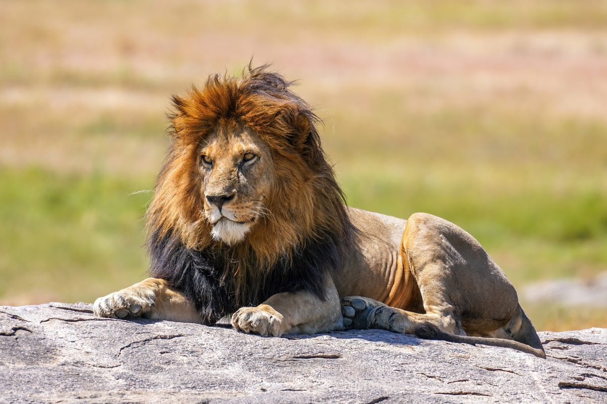

1. Vælg et dyr for at undersøge dets taksonomi
Se hvordan dyrene grupperes sammen baseret på fælles evolutionære træk.
Valgt dyr til undersøgelse:

Løve
💡 Klik på de forskellige niveauer i den lodrette sti for at se alternative undergrupper.
Taksonomisk Linje
Fra det mest generelle (Domæne) til det mest specifikke (Art).
Række (Phylum)
Inddeler riget efter dyrenes overordnede kropsplan.
Etymologi: ...
Valgt gruppe på dette niveau:
Leddyr
ArthropodaDyr med et hårdt ydre skelet af kitin, leddelte ben og en segmenteret krop.
Klasser under Leddyr (Arthropoda)
Her kan du se, hvordan denne gruppe deler sig op i mindre undergrupper i vores database. Klik på et kort for at skifte fokus.